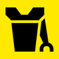
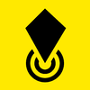
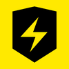
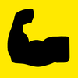
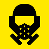
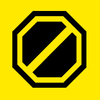
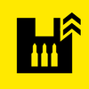
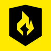

Armor Passives Tier List
Drag and drop armor passives to create your own tier list
Tip: Click on a Tier to edit the name & use the color picker to change the color!
S Tier
A Tier
B Tier
C Tier
Armor Passive Choices
Extra Padding - Provides a higher armor rating
Democracy Protects - 50% chance to not die when taking lethal damage. Prevents all damage from bleeding if chest hemorrhages

Servo-Assisted - Increases throwing range by 30%. Provides +50% limb health
Med-Kit - Increases initial inventory and holding capacity of stims by +2. Increases stim effect duration by 2.0s
Engineering Kit - Further reduces recoil when crouching or prone by 30%. Increases initial inventory and holding capacity of throwables by +2

Scout - Markers placed on the map will generate radar scans every 2.0s. Reduces range at which enemies can detect the wearer by 30%
Fortified - Further reduces recoil when crouching or prone by 30%. Provides 50% resistance to explosive damage

Electrical Conduit - Provides 95% resistance to arc damage

Peak Physique - Increases melee damage by 100%. Improves weapons handling with less drag on weapon movement

Inflammable - Provides 75% damage resistance to fire, allowing bearer to rest assured in their inflammability

Advanced Filtration - Provides 80% resistance to gas damage and effects

Unflinching - Helps prevent Helldivers from flinching when hit

Siege-Ready - Increases reload speed of primary weapons by 30%. Increases ammo capacity of primary weapons by 20%

Acclimated - Provides 50% resistance to fire, gas, acid, and electrical damage